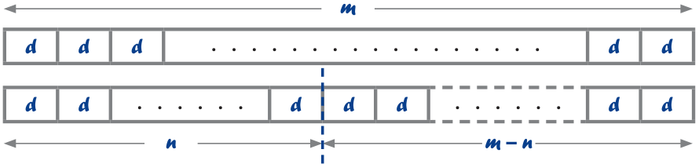
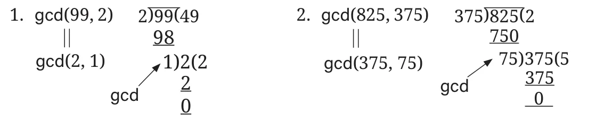
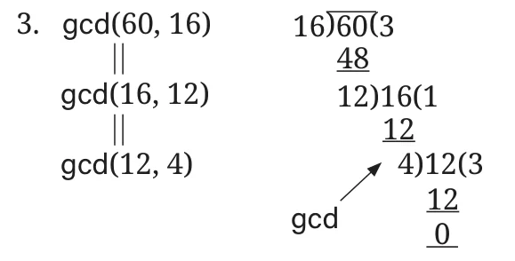

We started with a very basic algorithm. Since this was derived directly from the definition of gcd, it is easy to justify that the result it computes is actually the gcd.
Each successive refinement that we have proposed improves the efficiency but does not substantially change what is being computed. Hence, we can argue that all of the algorithms we have seen so far compute the correct value.
How efficient are these algorithms? Even in the final version, where we eliminated lists, we had to examine all numbers from 1 to \(\min(m, n)\). This is similar to what we saw when adding numbers by counting. If the smaller number goes from 3 digits to 4 digits, we have to scan 10 times as many values to find the common divisors. If we go from 3 digits to 5 digits, the work grows by a factor of 100.
As we did for adding, can we find an algorithm for gcd where the effort is proportional to the number of digits in the number, rather than the value of the number?
11.3.3 Euclid’s Subtraction Algorithm
An elegant solution to achieve this was written down by Euclid, in his book Elements. Historians believe that other Greek mathematicians knew of this algorithm before Euclid, but he was the first to put it down in writing.
Reducing a problem to a simpler one
The original version of Euclid’s algorithm makes use of the following observation. Let us assume that \(m \ge n\). Then, \(\gcd(m, n)\) is the same as \(\gcd(n, m - n)\).
Why is this the case?
- Let \(d\) be a common divisor of \(m\) and \(n\). Then we can write \(m\) as \(ad\) and \(n\) as \(bd\), where \(a\) and \(b\) are natural numbers. This means that \(m - n = ad - bd = (a - b)d\), so \(d\) is also a divisor of \(m - n\).
- On the other hand, if \(d\) divides both \(n\) and \(m - n\), then \(n = xd\) and \(m - n = yd\) for some natural numbers \(x\) and \(y\). This means that \(n + (m - n) = m = xd + yd = (x + y)d\), so \(d\) also divides \(m\).
This is shown visually below. If we can ‘tile’ \(m\) and \(n\) using blocks of size \(d\), we can also tile \(m - n\) by blocks of the same size. In fact, Euclid used a similar pictorial proof to justify his algorithm.

This observation tells us that any common divisor of \(m\) and \(n\) is also a common divisor of \(n\) and \(m - n\), and the converse is also true. Hence the set of common divisors are the same in both cases, which means that \(\gcd(m, n) = \gcd(n, m - n)\).
Euclid’s algorithm reduces the problem of finding \(\gcd(m, n)\) to that of finding \(\gcd(n, m - n)\). The second problem involves smaller numbers, so it should be a simpler problem to solve.
How do we solve it? We apply the same strategy: reduce it to \(\gcd(x, y)\) where \(x = \min(n, m - n)\) and \(y\) is the difference between \(n\) and \(m - n\).
When do we stop? Suppose we compute the gcd of a number with itself, say \(\gcd(23, 23)\). The answer should clearly be 23. When we reduce this we get \(\gcd(23, 0)\). In other words, if we reach \(\gcd(m, 0)\), the answer is \(m\).
Euclid’s algorithm for \(\gcd(m, n)\)
If m < n, reverse the numbers and compute gcd(n,m)If n = 0, report the answer as mOtherwise, reduce the problem to compute gcd(n,m−n)
Let us apply this algorithm to \(\gcd(375, 825)\), the problem that we saw before.
- Since \(375 < 825\), Step 1 asks us to reverse the numbers and compute \(\gcd(825, 375)\).
- Since \(825 - 375 = 450\), Step 3 asks us to reduce the problem to computing \(\gcd(375, 450)\).
- Since \(375 < 450\), Step 1 asks us to reverse the numbers and compute \(\gcd(450, 375)\).
- Step 3 asks us to reduce the problem to computing \(\gcd(375, 75)\).
- Step 3 asks us to reduce the problem to computing \(\gcd(75, 300)\).
- Since \(75 < 300\), Step 1 asks us to reverse the numbers and compute \(\gcd(300, 75)\).
- Step 3 asks us to reduce the problem to computing \(\gcd(75, 225)\).
- Since \(75 < 225\), Step 1 asks us to reverse the numbers and compute \(\gcd(225, 75)\).
- Step 3 asks us to reduce the problem to computing \(\gcd(75, 150)\).
- Since \(75 < 150\), Step 1 asks us to reverse the numbers and compute \(\gcd(150, 75)\).
- Step 3 asks us to reduce the problem to computing \(\gcd(75, 75)\).
- Step 3 asks us to reduce the problem to computing \(\gcd(75, 0)\).
- Since \(n = 0\), Step 2 tells us the answer is 75.
In the example above, we reduced the problem 7 times before finding the answer. Are we close to our original goal of finding an algorithm where the effort is proportional to the number of digits? Unfortunately, no.
Consider \(\gcd(99, 2)\). This will reduce successively to \(\gcd(97, 2)\), \(\gcd(95, 2)\), \(\gcd(93, 2)\), … , \(\gcd(5, 2)\), \(\gcd(3, 2)\), \(\gcd(2, 1)\), \(\gcd(1, 1)\), and \(\gcd(1, 0)\) eventually giving us the answer 1. In general, if we start with an odd number \(2k + 1\), \(\gcd(2k + 1, 2)\) will require about \(k\) reductions before we get the answer 1. This means the number of steps is proportional to the value we start with, rather than the number of digits used to write down the value.
11.3.4 Āryabhaṭa’s Division Algorithm
In Indian treatises like Āryabhaṭa’s Āryabhaṭīya (499 CE), we see the “long division” method for finding GCD using Indian place value numerals. It makes an efficient use of repeated “division by remainder” in place of repeated subtraction. For example, when one starts with 99 and subtracts 2 repeatedly, what remains, once one cannot subtract 2 anymore, is the remainder when 99 is divided by 2.
Hence, to improve the performance of Euclid’s algorithm, we can change the reduction step: instead of reducing \(\gcd(m, n)\) to \(\gcd(n, m - n)\), we reduce it to \(\gcd(n, m \bmod n)\), where \(m \bmod n\) stands for the remainder when \(m\) is divided by \(n\). For example, \(17 \bmod 5\) is 2 and \(33 \bmod 7\) is 5.
We saw earlier that a divisor \(d\) ‘tiles’ both \(m\) and \(n\) if and only if it ‘tiles’ both \(n\) and \(m - n\). In a similar way, we can argue that \(d\) ‘tiles’ \(m\) and \(n\) if and only if it tiles \(m\) and \(m \bmod n\). This justifies reducing \(\gcd(m, n)\) to \(\gcd(n, m \bmod n)\).
Here is the modified algorithm. Notice that the only change is in the third statement. The stopping condition is the same as before.
If m < n, reverse the numbers and compute gcd(n,m)If n = 0, report the answer as mOtherwise, reduce the problem to computing gcd(n, m mod n)
Consider the earlier example \(\gcd(99, 2)\) that took a long time to converge. Here is what happens when we execute the improved algorithm.
- Step 3 asks us to reduce the problem to computing \(\gcd(2, 1)\).
- Step 3 asks us to reduce the problem to computing \(\gcd(1, 0)\).
- Since \(n = 0\), Step 2 tells us the answer is 1.
In other words, we needed only two reduction steps to get to the final answer. Check that this would happen for any similar problem of the form \(\gcd(2k + 1, 2)\).
The above modified algorithm can be carried out concisely using the “long division” method given by Indians at least from the time of Āryabhaṭa. We illustrate the method through the following examples—

Here is another example—

In fact, it can be shown that the number of reductions needed in Āryabhaṭa’s division algorithm is now proportional to the number of digits in \(m\) and \(n\). Unfortunately, the justification for this fact is too involved to present here, but you will learn about it in future grades.
A Pinch of History
The influential Persian mathematician Al-Khwārizmī (780–850 CE), a scholar at the “House of Wisdom” in Baghdad, developed a great liking for Indian mathematics. He learnt Sanskrit, and around 820 CE wrote a detailed treatise expounding the Indian place value number system and the Indian procedures for the four fundamental operations — addition, subtraction, multiplication, and division. His original is lost, but its 12th-century Latin translation, Liber Algorismi de numero Indorum (“The Book of Al-Khwārizmī on Indian Numerals”), survives and played a major role in spreading Indian arithmetic through medieval Europe. Al-Khwārizmī’s name became so closely tied to these methods that the word algorismus — from Algoritmi, the Latin form of his name — came to mean any Indian method for numerical computation; it later contracted to algorism and then algorithm. Etymologically, then, “algorithm” originally denoted an Indian method of arithmetic, before it broadened to mean any well-defined, step-by-step systematic procedure for solving a class of problems.